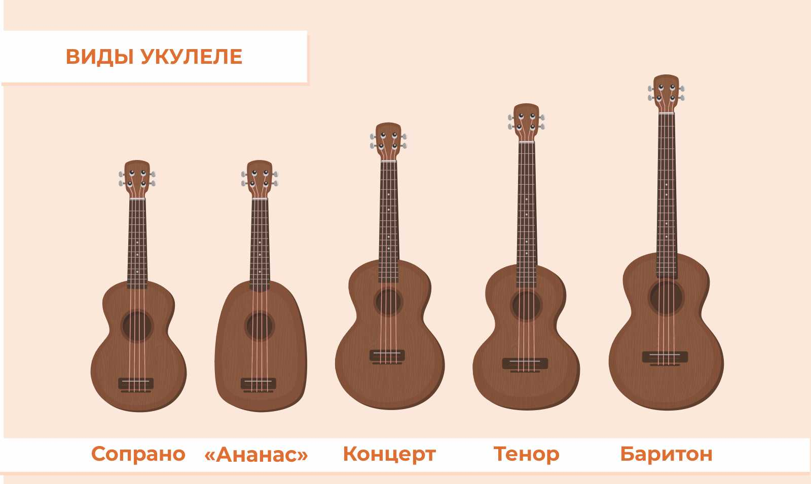

Укулеле-это маленькая,лёгкая гитара которая появилась на Гавайских островах очень давно. Название инструмента переводится как "прыгающия блоха".
У неё всего 4 струны и они не больно нажимаются, поэтому на ней очень просто начать играть первые мелодии!

Укулеле — это не просто уменьшенная версия гитары, а самостоятельный символ Гавайских островов, который завоевал мировую популярность благодаря своему жизнерадостному звучанию.
Сам инструмент родился в 1879 году, когда португальские переселенцы с острова Мадейра привезли на Гавайи свои традиционные мини-гитары.
Местные жители быстро полюбили звонкое звучание новинки и адаптировали под свои традиции.